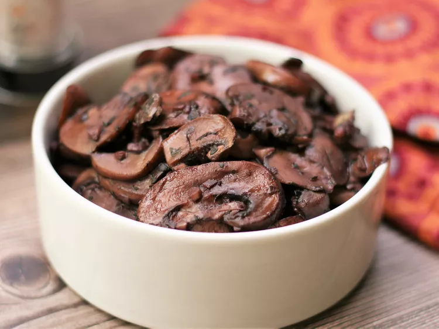

Garlic mushrooms

Description
These garlic mushrooms are easy to make by sautéing sliced mushrooms in
butter with red wine. Delicious with grilled steaks or on top of toasted
bread for a tasty appetizer.
Ingredients
- 1 tablespoon butter.
- 2 pounds sliced fresh mushrooms.
- 4 cloves garlic, minced.
- 1 teaspoon dried basil.
- 1 cup red wine.
Steps
-
Heat butter in a skillet over medium heat. Add mushrooms and garlic;
cook and stir until mushrooms are a light golden brown and liquid has
evaporated, about 10 minutes. Stir in basil.
-
Reduce heat to low, and pour wine into the skillet. Simmer until wine
has mostly evaporated. Serve immediately.
Back to homepage